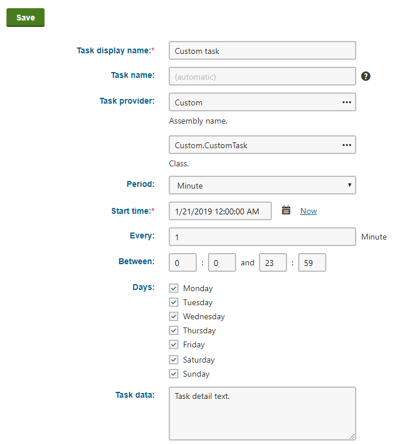
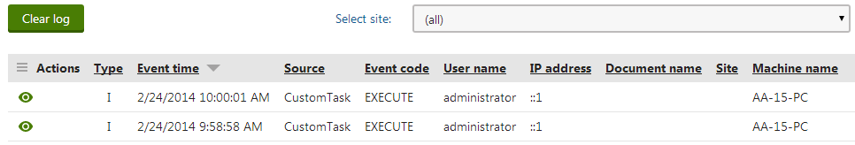

Scheduling custom tasks
The process of scheduling a custom task includes two steps:
Writing the code that performs the required actions
Creating a new scheduled task in the Kentico administration interface
Writing the task code
You need to define each scheduled task as a class that implements the CMS.Scheduler.ITask interface. To integrate this type of class into the application, you can:
Create a new assembly (Class Library project) in your solution and include the task class there. In this case, you must add the appropriate references to both the assembly and the main Kentico web project. The following example uses the assembly approach.
Define the scheduled task directly in the Kentico web project (the App_Code folder for web site installations). In this case, you need to register and load the class via the API as described in Loading custom classes from App_Code.
Choosing the correct option for the external scheduling service
You cannot define the task in the Kentico web project (App_Code folder) if you wish to use the external scheduling service. To run a custom task externally, you must add a new assembly to your project and then define the task class there.
Preparing a custom project
Set up a separate project for custom classes in your Kentico solution:
Open your Kentico solution in Visual Studio.
Create a new Class Library project in the Kentico solution (or reuse an existing custom project).
The assembly in the example is named Custom, but you can use any other name (e.g. with a unique company prefix).
Add references to the required Kentico libraries (DLLs) for the new project:
Right-click the project and select Add -> Reference.
Select the Browse tab of the Reference manager dialog, click Browse and navigate to the Lib folder of your Kentico web project.
Add references to the following libraries (and any others that you may need in your custom code):
CMS.Base.dll
CMS.Core.dll
CMS.DataEngine.dll
CMS.EventLog.dll
CMS.Scheduler.dll
Reference the custom project from the Kentico web project (CMSApp or CMS).
Defining the scheduled task class
Create a new class under your custom project. For example, name the class CustomTask.cs.
Edit the class and add using statements for the following namespaces:
usingCMS.Scheduler;usingCMS.EventLog;Make the class implement the ITask interface.
publicclassCustomTask: ITaskDefine the Execute method in the class:
namespaceCustom{publicclassCustomTask : ITask{/// <summary>/// Executes the task./// </summary>/// <param name="ti">Info object representing the scheduled task</param>publicstringExecute(TaskInfo ti){stringdetails ="Custom scheduled task executed. Task data: "+ ti.TaskData;// Logs the execution of the task in the event logEventLogProvider.LogInformation("CustomTask","Execute", details);// Returns a null value to indicate that the task executed successfully// Return an error message string with details in cases where the execution failsreturnnull;}}}Save all changes and rebuild your solution.
You must always include the Execute method when writing scheduled tasks. The system calls this method whenever the given task is executed, so it needs to contain all code implementing the required functionality.
In this example, the task only creates a record in the application's event log so that you can confirm it is being executed:
The TaskInfo parameter of the method allows you to access the data fields of the corresponding scheduled task object. The sample code adds the content of the TaskData field into the details of the event log entry.
The string returned by the method is displayed in the administration interface as the result of the task's most recent execution. You can leave it as null in this case.
Creating new scheduled tasks
Sign in to the Kentico administration interface.
Open the Scheduled tasks application.
Select the Site for which you wish to schedule the task (or (global) if you want the task to run for all sites or affect global objects).
Click New task and fill in the properties of the task.

Registering a new custom taskClick Save.
The system now executes the task regularly according to the specified interval.
Result
To check the result of this sample custom task, open the Event log application and look for entries with CustomTask as the Source.

Information events logged by the custom scheduled task